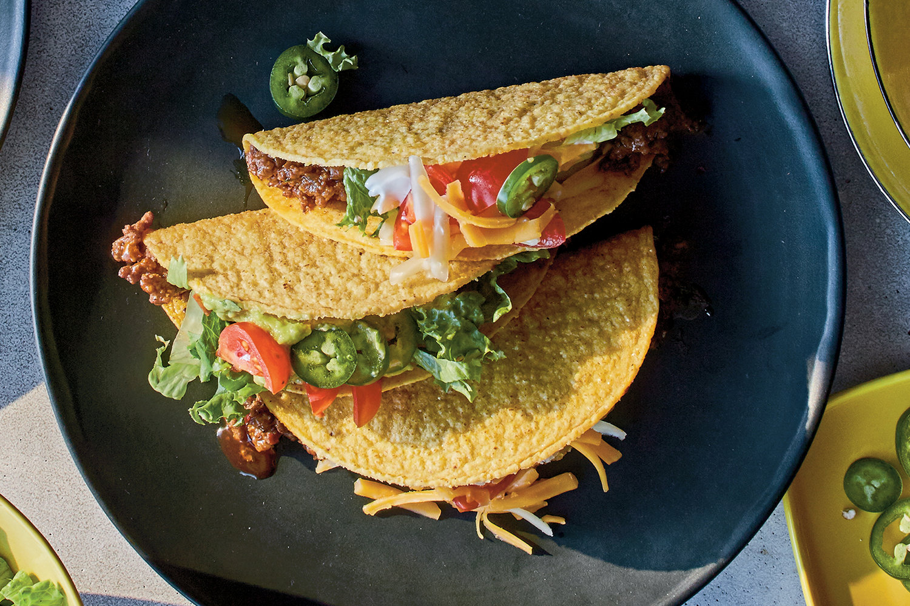

Home
Tacos

Description
Tacos are a traditional Mexican dish made with tortillas filled with seasoned meat, vegetables, and sauces.
The meat is cooked with spices, then served in warm tortillas with fresh toppings like lettuce, tomato, and cheese.
They can be customized with spicy sauces or guacamole.
Ingredients
- 1 lb ground beef or chicken
- 1 small onion, diced
- 2 cloves garlic, minced
- 1 tbsp olive oil
- 1 packet taco seasoning or spice mix (paprika, cumin, chili powder)
- 8 tortillas
- 1 cup shredded lettuce
- 1 tomato, diced
- 1 cup shredded cheese
- Sauce (optional)
- Salt and black pepper to taste
Steps
- Heat the oil in a skillet and sauté the onion and garlic.
- Add the meat and cook until browned.
- Stir in the seasoning and cook for another 5/10 minutes.
- Warm the tortillas in a pan or microwave.
- Fill each tortilla with the meat.
- Add lettuce, tomato, and cheese.
- Top with sauce if desired.
- Serve immediately.